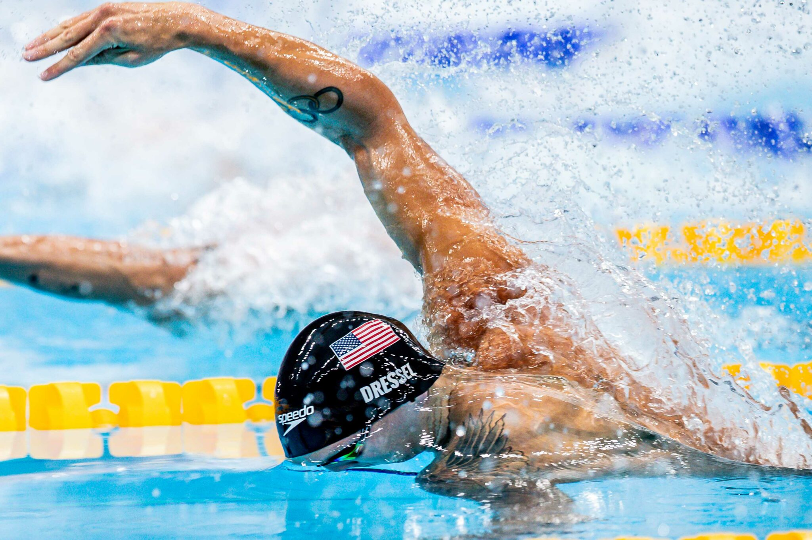

Lo stile libero, noto anche come crawl, è uno stile di nuoto in cui il nuotatore si trova in posizione prona, con il corpo orizzontale sulla superficie dell'acqua. In questo stile, le braccia seguono un movimento alternato sopra la superficie dell'acqua, mentre le gambe eseguono un movimento alternato sotto la superficie dell'acqua. Lo stile libero è lo stile di nuoto più veloce e più comunemente utilizzato nelle competizioni. Richiede una buona coordinazione tra braccia e gambe, nonché una notevole forza e resistenza muscolare.

Lo stile libero è uno stile di nuoto spesso utilizzato nelle competizioni e richiede una tecnica precisa per massimizzare l'efficienza del movimento nell'acqua. I nuotatori che praticano lo stile libero devono sviluppare una buona flessibilità, forza muscolare e resistenza cardiovascolare per eseguire correttamente questo stile. Inoltre, lo stile libero coinvolge molti gruppi muscolari, inclusi i muscoli delle spalle, delle braccia, del core e delle gambe, rendendolo un allenamento completo per tutto il corpo.
Le gare che comprendono questo stile sono: